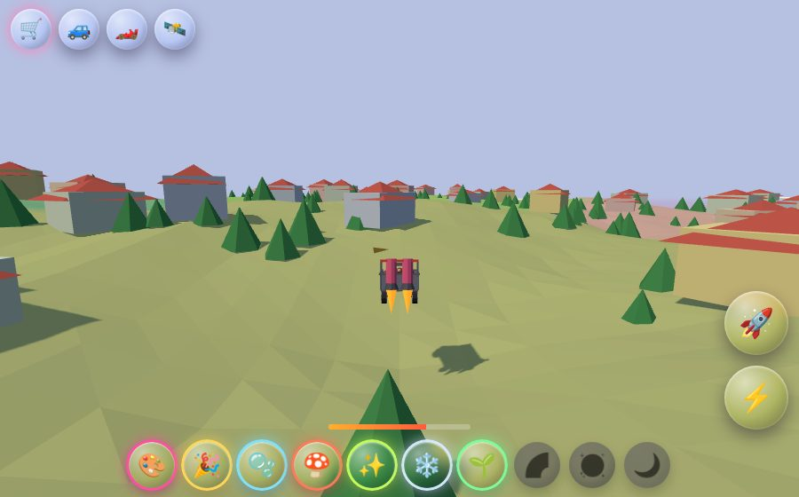
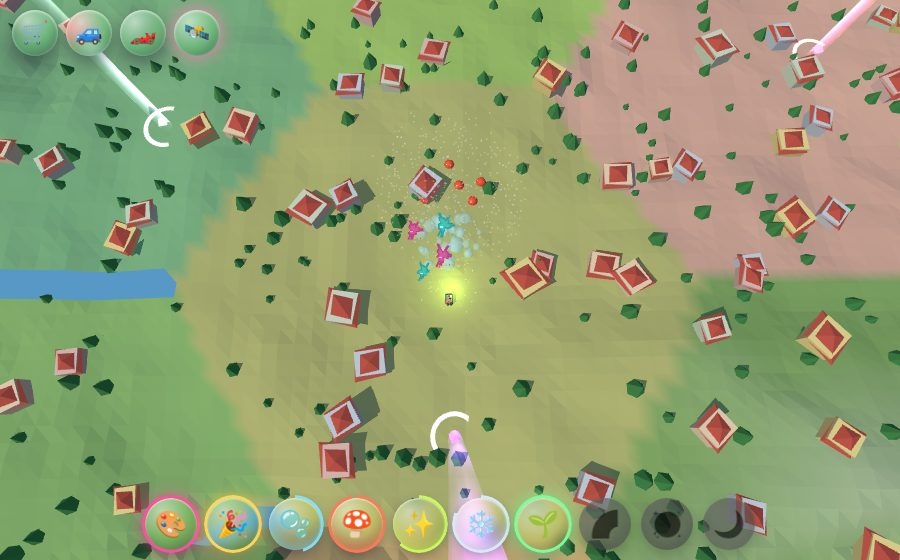
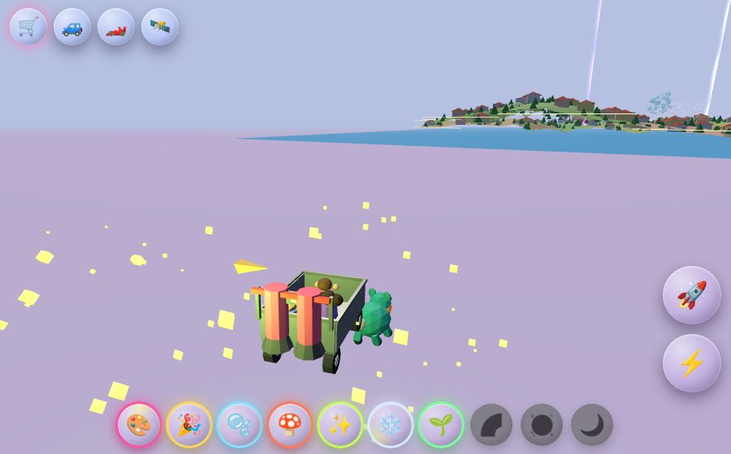

AW-STUDY-0057 · Round 1
The Effect Hunt and the Jet Cart
Ten collectible world effects hide around Winchester. Pick the hunt in the notebook, follow the laser beams, and drive Abbie, Ani and Daddy in a jetpack shopping cart. Find an effect once and it is yours forever, on a 15 second cooldown.
Play the huntReal town: notebook, then the cartWhat it looks like



The ten effects
Rules
- Beacons. Selecting the hunt in the notebook shoots a laser beam into the sky over every effect not yet found. Drive into the ring to collect.
- Use forever. Each found effect lives in a tray of ten round buttons (keys 1 to 0). 15 seconds of real time between casts, even across a reload.
- Vehicles. Jet cart, Moon buggy, toy-car coaster car (stand-ins until those threads add theirs), or overhead god mode: tap to send the cart, tap an armed effect to throw it.
- Wacky. Loose grip, squashy landings, boing mushrooms, floaty bubbles, slippery snow, a jet tank that refills on the ground, bonk-and-bounce props.
- Leave the tiles. Slow down; after 5 seconds Nubbin, a friendly original critter, runs in and tows you back.
- Inspired by, not borrowed. Kart-racer feel and GTA-style free roaming only. No other studio's characters, names, art or sounds.
- Tour: yes.
Still to build
Effects 7 to 10 (grow spray, rainbow arc, disco floor, moon hop), real cart and Nubbin models from concept art, house and tree collisions in the real town, and a charm for finishing the hunt. The full study is docs/oracle/effect-hunt/EFFECT_HUNT_STUDY.md.